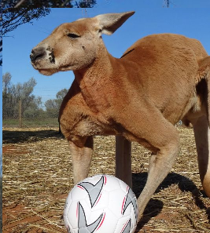

NUESTROS PERIODISTAS
JC Boudouqué
Especializado en noticias nacionales. Doctorado en ciencias sociales del instituto Aplaplac y ex consejal de Chimbarongo.
Pedro Canguro

Apasionado seguidor de todo lo que tenga una pelota. Hincha acérrimo del Audax Australiano desde 1939.